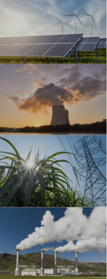
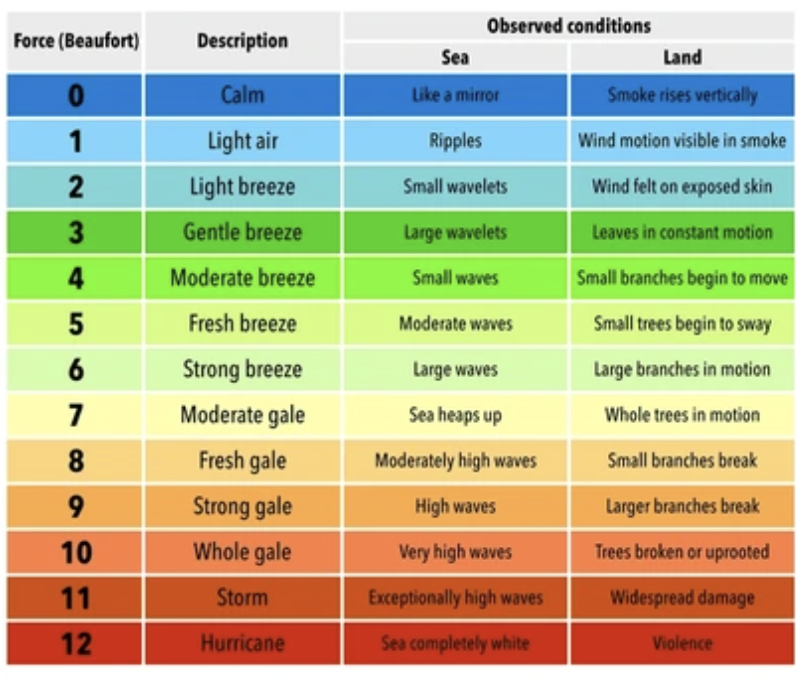
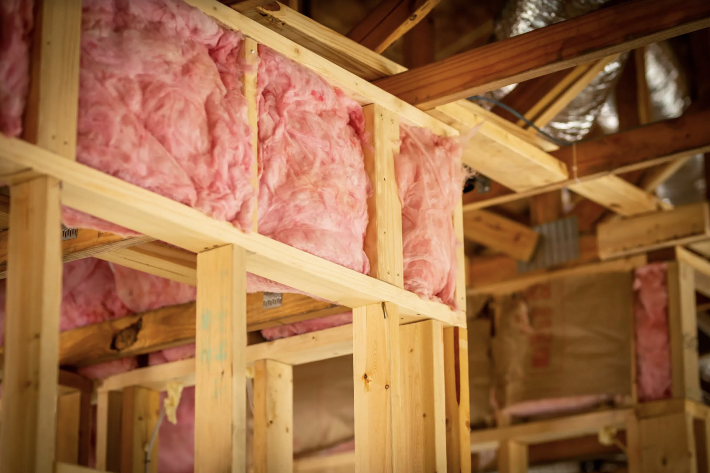
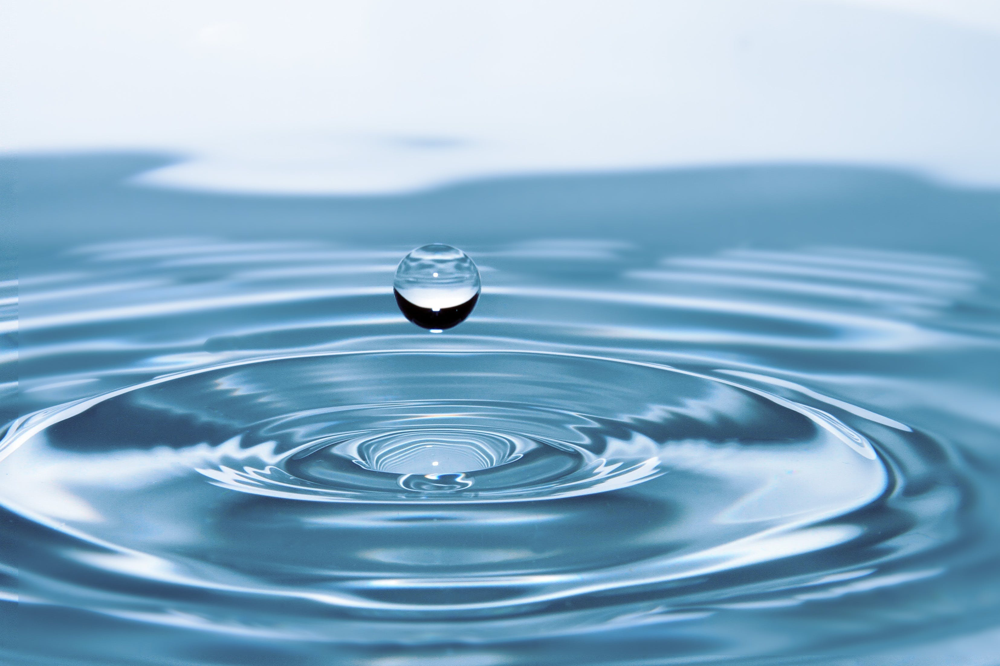

Clean energy refers to energy sources and technologies that have minimal negative impact on the environment and produce little to no greenhouse gas emissions. The primary goal of clean energy is to reduce environmental pollution and mitigate the effects of climate change. Clean energy sources are sustainable and renewable, meaning they can be naturally replenished and are not depleted when used. Some common examples of clean energy sources include:

Renewable Energy:
Solar Energy: Capturing sunlight to generate electricity using photovoltaic cells or solar thermal systems.
Wind Energy: Harnessing the power of wind to generate electricity through wind turbines.
Hydropower: Generating electricity by harnessing the energy of flowing water in rivers or dams.
Nuclear Energy:
Nuclear Power: While controversial, nuclear power is considered a low-carbon energy source, as it doesn't produce carbon dioxide during electricity generation. However, it comes with challenges related to safety, waste disposal, and public perception.
Bioenergy:
Biomass: Utilizing organic materials such as wood, crop residues, and other biological matter to generate heat or electricity.
Geothermal Energy:
Geothermal Power: Tapping into the Earth's internal heat to generate electricity or provide direct heating.
Geothermal power plants use steam to produce electricity.
The use of clean energy is essential for addressing environmental challenges, reducing dependence on finite fossil fuel resources, and promoting sustainable development. Governments, businesses, and individuals around the world are increasingly investing in and adopting clean energy technologies to transition to a more sustainable and low-carbon future.
How Does Home Energy Use Impact the Environment?
All forms of electricity generation have an environmental impact on our air, water, and land, but it varies. Of the total energy consumed in the United States, about 40% is used to generate electricity, making electricity use an important part of each person’s environmental footprint. Home energy use can have various environmental impacts, primarily depending on the sources of energy used and the efficiency of energy consumption. Here are some ways in which home energy use affects the environment:
Fossil Fuels: If a home relies on fossil fuels such as coal, natural gas, or oil for heating, cooking, or electricity, the combustion of these fuels releases carbon dioxide (CO2) and other greenhouse gases into the atmosphere. These gases contribute to climate change by trapping heat in the Earth's atmosphere.
Energy Sources: The environmental impact of home energy use is closely linked to the sources of electricity. If electricity is primarily generated from fossil fuels, the associated emissions contribute to air pollution and climate change. In contrast, using electricity from renewable sources like solar or wind power reduces these environmental impacts.
Appliance Efficiency: The efficiency of home appliances and systems plays a significant role. Energy-efficient appliances and lighting consume less electricity, reducing the demand for power generation and associated environmental impacts.
Insulation and HVAC Systems: Proper insulation and efficient heating, ventilation, and air conditioning (HVAC) systems can reduce the overall energy consumption of a home.
Water Heater Efficiency: The energy used to heat water for showers, laundry, and dishwashing contributes to a home's overall energy consumption. Energy-efficient water heaters can help reduce this impact.
Electronic Waste: The disposal of old or inefficient electronic devices and appliances contributes to electronic waste. Proper recycling and disposal practices are essential to minimize environmental harm.
Infrastructure Impact: The construction and maintenance of energy infrastructure, such as power lines and substations, can result in habitat disruption and land use changes.
What is my personal impact?
The emissions caused by electricity generation vary across the country due to many factors, including:
EPA’s renewable energy and energy efficiency programs are designed to help energy consumers in all sectors, state policymakers, and energy providers by providing objective information, creating public and private sector networks, and providing technical assistance. EPA also recognizes leading organizations that adopt energy efficiency and renewable energy policies and practices.
These programs aim to empower homeowners to make sustainable choices, save energy, and contribute to environmental conservation. By adopting energy-efficient practices and considering renewable energy options, homeowners can play a role in reducing their environmental impact.
Cost
Solar
Solar PV systems cost about $3 per watt installed. A 7,000 watt (7 kilowatt) system therefore costs about $21,000 to install. Such a system would provide 20 to 35 kilowatt-hours of electricity per day, depending on climate, and could meet most of a household’s demand.
Solar hot water systems can meet 50% of the hot water needs for a family of four and generally cost between $5,000 and $7,000 to install.
The average household in the U.S. spends about $125 a month on an energy bill. If your system is robust enough to entirely cover your energy usage, you could see savings of up to $1,500 a year. While you will see immediate savings on your first power bill after installing a solar system, your overall net savings will become apparent after several years of use—after the savings on your power bill have paid for the upfront costs of the panels and installation.
Solar Panel Yearly Savings Calculator
Wind
Small wind energy systems cost an average of $5 per 120 kilowatts to install. Purchasing and installing a system can range from $10,000 to $70,000, depending on local zoning, permitting, and utility interconnection costs.
Small wind turbines can be a cost-effective way to generate renewable electricity for your home. However, many residential properties are not suitable for wind turbines for a few reasons.
For one, to generate enough electricity to make the upfront investment worthwhile, wind turbines need to be in a windy location. You want consistent wind patterns capable of spinning the wind turbine all year long to make the upfront investment worthwhile. As a general rule of thumb, if the average annual wind speed on your property is less than 5 meters per second, it's likely not a suitable location for a small wind turbine.
The payback period for using energy associated with wind can be around six months. This varies for smaller turbines.

Wind Speed Estimator
Rebates
Many homeowners can sell any excess energy their solar and wind systems produce back to their utility providers and, therefore, pay off their renewable energy investments more quickly. Most states have established “net metering” rules for customers who generate excess electricity through solar, wind, or other systems and feed it into the grid.
HOME MODIFICATIONS
Geothermal Heat Pumps
Instead of using an air-source system, opt for a geothermal heat pump,
which draws heat from the earth rather than the air.
During hotter months, the ground below is cooler, and during cooler months, the
ground is hotter, allowing your home to adjust
to the temperature outside. This saves energy and is more friendly to the
environment than an air source. There are different
types of Geothermal heat pumps, for more information on the different types,
click here.
For installation, click here

Install Insulation
This allows for resistance to cold air leaking into your home in the
winter, and hot air in the summer. This will reduce
energy bills as it keeps the hot air in and cold air out during winter, and
vice versa in the summer. The amount of insulation
you will need depends on the house you have and climate you reside in.
Consulting a professional is a good course of action,
click here to find local
contractors in your area for your home's needs.
Solar panels
Solar Panels convert sunlight into electrical energy, reducing
emissions. Some roofs might not be equipped for solar panels,
it's important to determine the size and shape of your roof and when it will
be due for a replacement to see if your home is
suitable for solar panels. Click here
to find solar installation companies near you. If your home isn't adequate,
you can try community solar,
which are projects that bring energy to multiple people. Click here
to see if a solar farm is near you.

Update Plumbing
If your plumbing predates early 90s, then you could be wasting
unnecessary water due to federal standards on water waste
being different. Switching to a WaterSense labeled toilet, shower, or other
plumbing fixture will stop water waste.
Click here
for more information.
Ethanol fireplace
No toxic chemicals or compounds are released with this fireplace, and
they run on biofuel which is made by plant by-products.
No ventilation is required for this fireplace because it doesn't release
any toxic compounds. Click here
for steps on how to install yourself.
Tax Rebate Information
What is a Tax Credit?
A tax credit is a dollar-for-dollar reduction in the amount of income tax you would otherwise owe. For example, claiming a $1,000 federal tax credit reduces your federal income taxes due by $1,000.
Federal Solar Tax Credit Explained
The federal residential solar energy credit is a tax credit that can be claimed on federal income taxes for a percentage of the cost of a solar PV system paid for by the taxpayer. This credit applies to systems installed between January 1, 2017, and December 31, 2034.
Credit Percentage:
26% for systems installed in 2020 and 2021.
30% for systems installed between 2022-2032.
26% for systems installed in 2033.
22% for systems installed in 2034.
Eligibility Criteria:
Installation completed during the tax year.
Located at a residence in the United States.
Ownership of the solar PV system (not leased or purchased electricity).
Expenses Included:
Solar PV panels or cells.
Contractor labor costs, including permitting fees.
Energy storage devices with a capacity rating of 3 kWh or greater (for systems installed after December 31, 2022).
Sales taxes on eligible expenses.
How Other Incentives Affect the Federal Tax Credit
Utility Rebates:
Excluded from income taxes.
Subtract from system costs before calculating the tax credit.
Renewable Energy Certificates:
Payments likely considered taxable income.
Does not reduce the federal solar tax credit.
State Government Rebates:
Generally do not reduce the federal tax credit.
State Tax Credits:
Generally do not reduce federal tax credits.
Impact on taxable income reported on federal taxes.
What's my solar incentive?
You may not find information on your state if it does not have significant solar benifits. 17/50 states offer significant solar benefits.
Important Note: The Tax Cuts and Jobs Act of 2017 placed a $10,000 limit on state and local tax (SALT) deduction through 2025. Therefore, if a homeowner is still paying more than $10,000 in SALT after claiming a state tax credit, the state tax credit benefit would not effectively be reduced by the federal tax rate, as it would not impact federal taxes (due to the SALT limit).
Green Living
What is Green Living?
"Green Living" is a term that describes a lifestyle that attempts to reduce the use of Earth's natural resources by an individual or society. Its practitioners often attempt to reduce their ecological footprint by altering their home designs and methods of transportation, energy consumption and diet.
Reduce
Shopping and purchasing is one of the greatest contributers to annual greenhouse gas emmissions. Even simple purchases like groceries have major impacts on our carbon footprint: food is often left rotting in our fridges. To live a greener life-style, reduce shopping and make a list the next time you go to the store.
Reuse
Living a more eco-friendly life style does not mean throwing out what you already own in favor of more "green" products. Purchasing new stuff causes more harm that good. Instead, take a look at some of these ways to resue what your currently have.